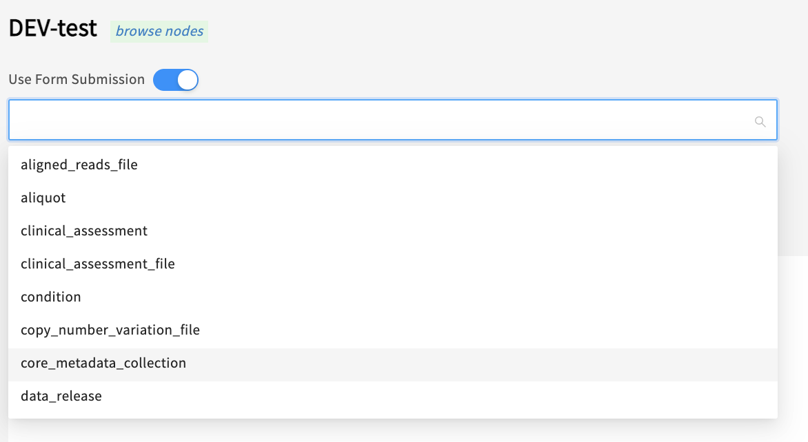
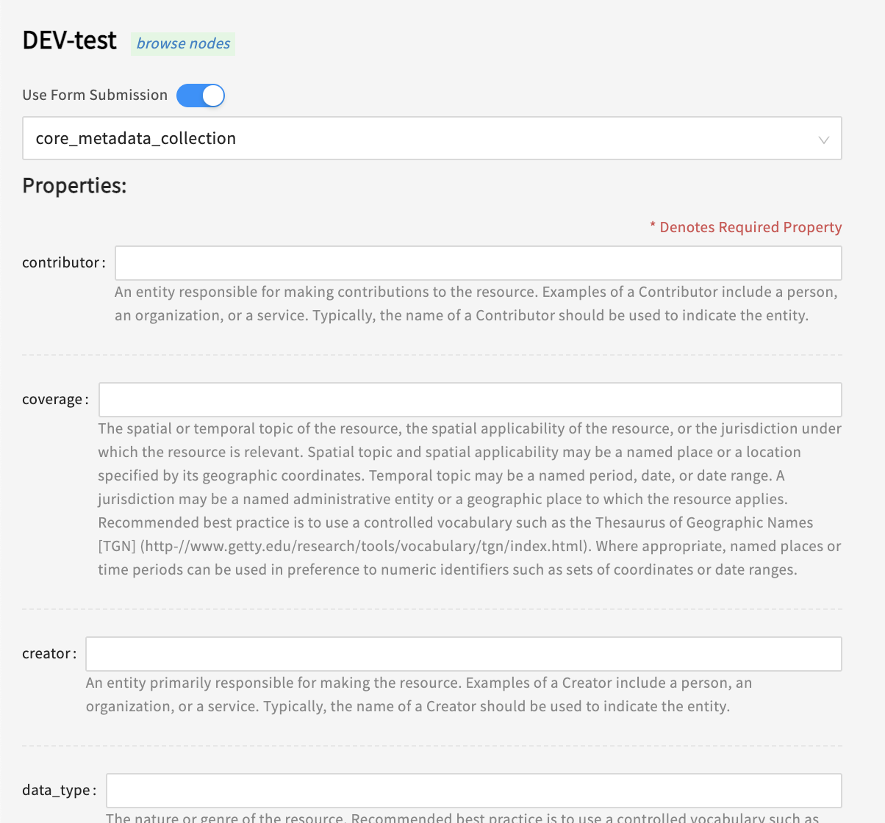
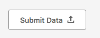
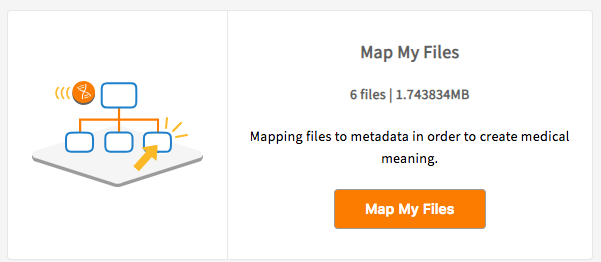
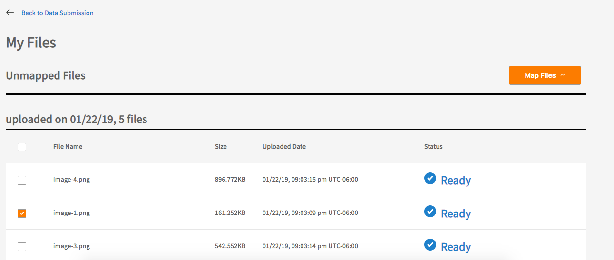
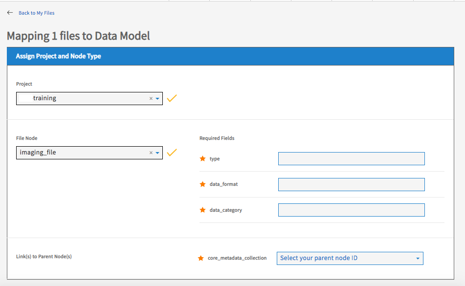
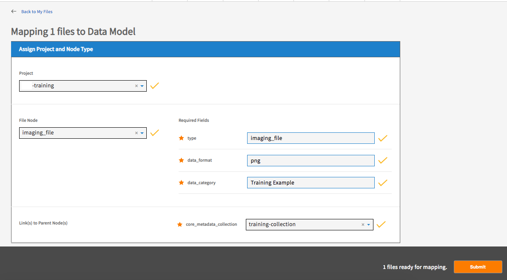

Unstructured Data (Data Files)¶
Unstructured data are simply data files that have do not necessarily conform to any particular schema or format. Some data files may be consistently structured (e.g .bam or .png), but Gen3 treats these simply as files and does not check whether they conform to a particular internal format or not. To make data available to end users you must first upload the files and associate them with the appropriate node in the data dictionary.
Standard Submission Process¶
1. Prepare Project in Submission Portal¶
In order to upload data files you must at minimum have a program, project, and at least one record in the core_metadata_collection node or other data containing node. To review how to submit the program and project nodes see here.
This documentation will utilize the core_metadata_collection node but other nodes can be used depending on your unique data model. If your project already has at least one record in a node of this type, you can skip to step 2.
Do the following to create your first core_metadata_collection record:
- Go to your data commons' submission portal website
- Click on 'Submit Data'
- Find your project in the list of Projects and click 'Submit Data'
-
Click 'Use Form Submission' and choose
core_metadata_collectionfrom the dropdown list (or edit and upload this TSV by clicking 'Upload File' then 'Submit')

-
Fill in the required information (see note below)
- Click 'Upload submission json from form' and then 'Submit'
- Make note of the
submitter_idof yourcore_metadata_collectionrecord for step 3 below
Note: Minimally,
submitter_idandprojects.codeare required properties. The projectcodeis the name of your project without the "program-" prefix. For example, if your project URL is https://gen3.datacommons.io/example-training, your project'scodewould be 'training', theprogramwould be 'example', and yourproject_idwould be the combination: 'example-training'.
You should have received the message:
succeeded: 200
Successfully created entities: 1 of core_metadata_collection
If you received any other message, then check the 'Details' to help determine the error.
To view the records in the core_metadata_collection node in your project, you can go to:
https://gen3.datacommons.io/example-training/search?node_type=core_metadata_collection
(replacing the gen3.datacommons.io with your commons base URL and example-training with an actual project_id).
2. Upload Data Files to Object Storage¶
Adding files to your new Gen3 project can be done using one of two methods. The gen3-client tool (shown in steps below) offers users an easy way to upload files to Amazon S3 buckets while simultaneously indexing the files and assigning them each a unique GUID or object_id. Alternatively, if you are comfortable scripting and require something other than the default AWS bucket used by the gen3-client or your data files are already uploaded to their storage location in the cloud, we offer an option for indexing data already found in the cloud. This method offers several other benefits including the possibility of using multiple cloud resources and submitting multiple batches of data set files at once. The following documentation will focus on using the gen3-client to upload data files, including spreadsheets, sequencing data (BAM, FASTQ), assay results, images, PDFs, etc., to Amazon S3 cloud storage.
- Download the latest compiled binary for your operating system.
-
Configure a profile with credentials downloaded from your Profile:
Text Only3. Upload Files: single data file, a directory of files, or matching files:./gen3-client configure --profile=<profile_name> --cred=<credentials.json> --apiendpoint=<api_endpoint_url>Text Only./gen3-client upload --profile=<profile_name> --upload-path=~/files/example.txt ./gen3-client upload --profile=<profile_name> --upload-path=~/files/ ./gen3-client upload --profile=<profile_name> --upload-path=~/files/*.txt
For detailed instructions on configuring and using the gen3-client, visit the Gen3 client documentation.
3. Map Uploaded Files to a Data File Node¶
Once data files are successfully uploaded, the files must be mapped to the appropriate node in the data model before they're accessible to authorized users.
-
Go to your data commons submission portal website.
-
Click 'Submit Data'.

-
Click 'Map My Files' button.

-
Select the files to map using the checkboxes and click 'Map Files' button.

-
Select the project and node that the files belong to.

-
Fill in the values of any required properties and click 'Submit' button.

Note: The required property 'Type' in step 6 is the node's name (the 'type' of node) and should be the same as the value selected from the node dropdown list in step 5.
You should receive the message "# files mapped successfully!" upon success.
Indexing files already found in the cloud¶
This method is appropriate if you are comfortable scripting and require something other than the default AWS bucket used by the gen3-client or your data files are already uploaded to their storage location in the cloud. This method offers several other benefits including the possibility of using multiple cloud resources and submitting multiple batches of data set files at once. The following documentation will focus on using the gen3-client to upload data files, including spreadsheets, sequencing data (BAM, FASTQ), assay results, images, PDFs, etc., to Amazon S3 cloud storage. If these criteria do not apply then you should use the Standard upload process instead.
1. Prepare Project with the Gen3 SDK tools¶
Though not strictly required to be done as a first step, a Gen3 project must be present in the Sheepdog microservice to associate data files to before file indexing can take place. To achieve this, the Gen3 Submission SDK has a comprehensive set of tools to enable users to script submission of programs and projects. Alternatively, the GUI submission platform can be used to create a project.
Sample Code for submission of a Program and Project to a data commons:
import gen3
from gen3.submission import Gen3Submission
Gen3Submission.create_program(program_json)
Gen3Submission.create_project('test_program', project_json)
2. Selection and Granting Gen3 Secure Access to Cloud Resources¶
As Gen3 is considered "cloud agnostic", any or even multiple cloud resources can be configured to contain data for controlled end-user access. If your data is already located in the cloud, please see the following section for considerations in the structure and permissions settings.
End-user access to cloud resources is enabled by signed-urls with authorization checks within Gen3 to ensure valid and secure access. Policies within the respective cloud resources should be configured in the Gen3 Fence Microservice to allow the; Gen3 Auth Service Bot - AWS, Gen3 Auth Service Bot - Azure, or Gen3 Auth Service Bot - Google to have access for the end user.
AWS S3 example bucket policy for READ access:¶
{
"Version": "2012-10-17",
"Statement": [
{
"Sid": "AllowListLocation",
"Effect": "Allow",
"Principal": {
"AWS": [
"arn:aws:iam::895962626746:user/fence_bot"
]
},
"Action": [
"s3:GetBucketLocation",
"s3:ListBucket"
],
"Resource": "arn:aws:s3:::<YOURBUCKETHERE>"
},
{
"Sid": "AllowGetObject",
"Effect": "Allow",
"Principal": {
"AWS": "arn:aws:iam::895962626746:user/fence_bot"
},
"Action": "s3:GetObject",
"Resource": "arn:aws:s3:::<YOURBUCKETHERE>/*"
}
]
}
The location for the example AWS configuration posted above is available here.
3. Upload files to Object Storage with Cloud Resource Command Line Interface¶
Data can be uploaded to a single or separate cloud resources as long as requirements for access and authorization are met. In order to support the many advantages of using Gen3’s standard tooling for CLI-DFS, data needs to first be organized and copied to cloud buckets following the guidelines detailed below.
Allocating Data in Buckets Based on User Access¶
Gen3 has the capability to grant access granularity at the bucket level designation only. In this way data a particular bucket should only be associated with a single user access.
Bucket Allocation Example:¶
A user’s authorization may look something like:
A user has read access to phs001416.c1, phs001416.c2, phs000974.c2
The data in buckets could be separated by phsid+consent code combinations (as this is the smallest granularity of data access required).
The following bucket structure supports the ingestion of dbGaP’s MESA and FHS projects (from TOPMed). Each project has 2 distinct consent groups, and the data is mirrored on both AWS and Google buckets.
TOPMed-MESA (phs001416.c1 and .c2) TOPMed-FHS (phs000974.c1 and .c2)
| Project | AWS buckets | Google buckets |
|---|---|---|
| MESA (consent group 1) | s3://nih-nhlbi-topmed-released-phs001416-c1 | gs://nih-nhlbi-topmed-released-phs001416-c1 |
| MESA (consent group 2) | s3://nih-nhlbi-topmed-released-phs001416-c2 | gs://nih-nhlbi-topmed-released-phs001416-c2 |
| FHS (consent group 1) | s3://nih-nhlbi-topmed-released-phs000974-c1 | gs://nih-nhlbi-topmed-released-phs000974-c1 |
| FHS (consent group 2) | s3://nih-nhlbi-topmed-released-phs000974-c2 | gs://nih-nhlbi-topmed-released-phs000974-c2 |
With a setup similar to this, Gen3 is able to support signed URLs and fully configured end-user access.
Bucket Population¶
Once a data allocation scheme is determined, data can be uploaded accordingly to cloud buckets. It should be noted that while Amazon AWS and Google are the most supported cloud providers, Gen3 is cloud agnostic. Any method and hierarchy structure can be used for upload as long as a the same parent directory is maintained with end user access.
Regardless of the cloud platform, the CLI-DFS workflow requires file data gathered from its cloud location. Information such as file name, location, size, and md5sum are usually available from cloud platforms. Documentation for AWS, Google and Microsoft Azure should provide guidance to acquiring this information.
Note: The recommended (detailed here) way for Gen3 to provide controlled access to data is via Signed URLs. Signed URLs are the only fully cloud-agnostic method supported by Gen3 and additionally are supported by all major cloud resource providers. They also allow for short-lived, temporary access to the data for reduced risk. Lastly, utilizing signed URLs places very few restrictions on the organization of data within could bucket(s).
The files relevant to a Gen3 CLI-DFS Workflow submission:
-
Bucket mapping file: File that maps authorization designations to parent level bucket locations.
-
Bucket manifest file: Created for each submission and contains file level information (i.e. name, size, md5sum).
-
Indexing manifest: Created for each submission and submits both authorization and file level information into the Indexd microservice.
The creation and submission of these files is covered below.
Note: The recommended (and simplest) way for Gen3 to provide controlled access to data is via Signed URLs. Signed URLs are the only fully cloud-agnostic method supported by Gen3 and additionally are supported by all major cloud resource providers. They also allow for short-lived, temporary access to the data for reduced risk. Lastly, utilizing signed URLs places very few restrictions on the organization of data within could bucket(s).
4. Create Bucket Mapping and Manifest Files¶
The below is the Gen3 recommended indexing file schema. While possible to utilize other configurations, they likely require significantly more administrative effort to maintain correct permissions in the cloud platform(s).
Bucket Mapping File¶
A Bucket mapping file is used maintain clear links between designated project authorization and parent level bucket locations. It should be maintained for the entire commons and appended when new datasets are ingested. The bucket mapping file should minimally contain the following fields and be presented in a tab delimited format.
The below example has 4 different authorizations for 8 bucket locations
Example Bucket Mapping File¶
| bucket | authz |
|---|---|
| s3://nih-nhlbi-topmed-phs001416-c1 | phs001416.c1 |
| gs://nih-nhlbi-topmed-phs001416-c1 | phs001416.c1 |
| s3://nih-nhlbi-topmed-phs001416-c2 | phs001416.c2 |
| gs://nih-nhlbi-topmed-phs001416-c2 | phs001416.c2 |
| s3://nih-nhlbi-topmed-phs000974-c1 | phs000974.c1 |
| gs://nih-nhlbi-topmed-phs000974-c1 | phs000974.c1 |
| s3://nih-nhlbi-topmed-phs000974-c2 | phs000974.c2 |
| gs://nih-nhlbi-topmed-phs000974-c2 | phs000974.c2 |
In the situation where Gen3 must support cloud-specific data access methods, Gen3 also requires the authz or acl column which contain the granular access control which would represent access to the entire bucket).
The authz column coordinates with the user permissions set in the Gen3 microservices Fence and Arborist.
Bucket Manifest File¶
The bucket manifest file should contain individual file level metadata for a single batch of ingestion files. This means there will be several bucket manifest files per data commons. It is recommended that they are represented in a tab separated variable format and in each, a row should minimally contain the following information:
- File name
- File size
- File hash via md5sum
- Exact file url in the bucket location
If files are mirrored between cloud locations, bucket urls can be appended together with a whitespace delimiter.
In the below example of a Bucket manifest file, please note the mirrored file bucket locations in S3 and GCP:
Example Bucket Manifest File¶
| File_name | File_size | md5sum | bucket_urls |
|---|---|---|---|
| examplefile.txt | 123456 | sample_md5 | s3://nih-phs001416-c1/exfile.txt gs://nih-phs001416-c1/exfile.txt |
| otherexamplefile.txt | 123456 | different_md5 | s3://nih-nhlbi-topmed-released-phs001416-c1/otherexamplefile.txt gs://nih-nhlbi-topmed-released-phs001416-c1/otherexamplefile.txt |
| examplefile.txt | 123456 | sample_md5 | s3://nih-nhlbi-topmed-released-phs001416-c2/examplefile.txt gs://nih-nhlbi-topmed-released-phs001416-c2/examplefile.txt |
| otherexamplefile.txt | 123456 | different_md5 | s3://nih-nhlbi-topmed-released-phs001416-c2/otherexamplefile.txt gs://nih-nhlbi-topmed-released-phs001416-c2/otherexamplefile.txt |
5. Create Indexing Manifest File¶
An Indexing Manifest File is submitted to the Indexd microservice and is a combination of both the Bucket Mapping and Manifest file information.
While the two preceding files are not strictly necessary for maintenance and operation of a Gen3 data commons, they are recommended for ease of maintenance. For instance, if multiple authorization designations are required within a single bucket location, administrators will need to set them individually directly in the cloud platform as Gen3 has no capability to interact with cloud resource permissions in that manner.
Indexd Microservice Overview¶
The Indexd microservice is used by Gen3 to maintain an index of all files in a data commons and serves as the data source by several other microservices to build various features of Gen3 data commons. A central part of what enables Gen3's Indexd is the integration of a Globally Unique Identifier (GUID) to each element added to the microservice.
Globally Unique Identifier (GUID)¶
GUIDs are primarily used to track and provide the current location of data and is designed to persist even as data is moved or copied. Information regarding the concept of GUIDs, GUID generation and look up of particular GUIDs can be found at dataguids.org.
Indexing Manifest Components and Structure¶
By default GUIDs will be added to rows that lack an entry for that field when an indexing manifest is submitted to Indexd. GUIDs that are minted in this way are both available by querying Indexd or by referencing the submission output file that is generated.
As the Indexing Manifest is the file that is submitted to the Indexd microservice, it must be submitted in a tab separated variable file (.tsv) and contain the following fields:
- Globally Unique Identifier (GUID) - Either generated by indexd microservice at the time of submission or provided by the user prior to submission
- File name
- File size
- File hash via md5sum
- Exact file url in the bucket location
- authz or acl authorization designation
Users may notice that with the exception of GUIDs, this file is a combination of the Bucket Mapping and Manifest files. If either AWS or Google cloud resources are used, Gen3 offers tools to produce bucket manifest files available at the following links:
- AWS S3 Bucket Manifest Generation
-
Google Bucket Manifest Generation
Note: Bucket manifest generation scripts require using Gen3's full deployment code and, depending on the amount of data, calculating checksums for files can be costly and take time.
The below is an example of a Indexing Manifest File:
Example Indexing Manifest File¶
| guid | File_name | File_size | md5sum | bucket_urls | auth |
|---|---|---|---|---|---|
| dg.4503/02... ...7103bbe | examplefile.txt | 34141 | c79... ...dbd | s3://nih-phs001416-c1/exfile.txt gs://nih-phs001416-c1/exfile.txt | [phs001416.c1] |
| dg.4503/00... ...0211dfg | otherexamplefile.txt | 562256 | 65a... ...bca | s3://nih-nhlbi-topmed-released-phs001416-c1/otherexamplefile.txt gs://nih-nhlbi-topmed-released-phs001416-c1/otherexamplefile.txt | [phs001416.c1] |
| dg.4503/00... ...7103bbe | examplefile.txt | 36564 | dca... ...774 | s3://nih-nhlbi-topmed-released-phs001416-c2/examplefile.txt gs://nih-nhlbi-topmed-released-phs001416-c2/examplefile.txt | [phs001416.c2] |
| dg.4503/01... ...0410nnd | otherexamplefile.txt | 2675 | 742... ...f1b | s3://nih-nhlbi-topmed-released-phs001416-c2/otherexamplefile.txt gs://nih-nhlbi-topmed-released-phs001416-c2/otherexamplefile.txt | [phs001416.c2] |
6. Submit file Indexing Manifest to Indexd¶
Once created, Gen3 offers an Indexing SDK toolkit to build, validate and map all files into a Gen3 datacommons. The SDK functions reconcile and add data to the indexd microservice.
Sample code for validation and submission of a constructed indexing manifest file to indexd.
import gen3
from gen3.tools.indexing import validate_manifest_format
from gen3.tools.indexing.index_manifest import index_object_manifest
file_path = <.tsv_indexd_file_addition>
gen3.tools.indexing.validate_manifest_format.is_valid_manifest_format(file_path)
gen3.tools.indexing.index_manifest.index_object_manifest(commons_url=commons_url,
manifest_file=file_path,
thread_num=8,
auth=authentication_object,
output_filename=index_manifest[:-4] + '_output.tsv')
Please refer to the authentication sdk for set up of the authentication_object used above
Note: Users in the Gen3-Community have published a repo that index large pre-existing s3 buckets (disclaimer: CTDS is not responsible for the content and opinions on the third-party repos).
7. Map files to a Data Node with the Gen3 SDK¶
Once indexing is complete, Gen3 offers a Submission SDK toolkit to map indexed data files to nodes designated to contain data in the data dictionary via the Sheepdog microservice. Unless single data files are being ingested, the SDK submission toolkit generally requires a tab separated variable file, and specific nodes requirements for each data file type can be specified in the data dictionary. After mapping in Sheepdog is complete the file metadata will be mapped from the program and project administrative nodes (previously created) to its respective data containing nodes. The mapping in sheepdog is the basis for other search and query services either natively in sheepdog or after other extraction, transformation and load (ETL) services have been performed.
Gen3 client instructions for uploading data¶
The gen3-client provides an easy-to-use, command-line interface for uploading and downloading data files to and from a Gen3 data commons from the terminal or command prompt, respectively. Only information related to uploading is included below. For instruction related to download please review the Downloading Files Using the Gen3-client section.
1. Installation Instructions¶
Installation instructions are covered in the Downloading Files Using the Gen3-client section.
2. Configure a Profile with Credentials¶
Profile configuration instructions are covered in the Downloading Files Using the Gen3-client section.
3. Upload Data Files using the Gen3 Client¶
For the typical data contributor, the gen3-client upload command should be used to upload data files to a Gen3 Data Commons. The commands upload-single and upload-multiple are used only in special cases, for example, when a file or collection of files are uploaded to specific GUIDs after generating structured data records for the files. These two commands are described in further detail in sections 3 and 4 below.
When data files are uploaded to a Gen3 data common's object storage, they are assigned a unique, 128-bit ID called a GUID, which stands for "globally unique identifier". GUIDs are generated by the system software, not provided by users, and they are stored in the property object_id of a data_file's structured data.
When using the gen3-client upload command, a random, unique GUID will be generated and assigned to each data file that has been submitted, and an entry in the indexd database will be created for that file, which associates the storage location of the file with the file's object_id ("did" in the indexd record, see below for more details).
Options and User Input Flags¶
The following flags can be used with the gen3-client upload command:
| Flag name | Required? | Default value | Explanation | Sample usage |
|---|---|---|---|---|
| profile | Yes | N/A | The profile name that user wishes to use from the config file. | --profile=demo |
| upload-path | Yes | N/A | The directory or file in which contains file(s) to be uploaded. | --upload-path=../data_folder/ |
| batch | No | false | If set to `true`, gen3-client will upload multiple files simultaneously. The maximum number of file can be uploaded at a same time is specified by the `numparallel` option | --batch=true |
| numparallel | No | 3 | Number of uploads to run in parallel. Must be used in together with the `batch` option. | --numparallel=5 |
| include-subdirname | No | false | Include subdirectory names in file name. | --include-subdirname=true |
| force-multipart | No | false | Force to use multipart upload if possible. | --force-multipart=true |
Example of a single file upload:
~> gen3-client upload --profile=demo --upload-path=test.txt
2019/11/19 12:45:41 Finish parsing all file paths for "/Users/demo/Documents/test.txt"
The following file(s) has been found in path "/Users/demo/Documents/test.txt" and will be uploaded:
/Users/demo/Documents/test.txt
2019/11/19 12:45:41 Uploading data ...
test.txt 25 B / 25 B [=======================================================================================================================================] 100.00% 0s
2019/11/19 12:45:41 Successfully uploaded file "/Users/demo/Documents/test.txt" to GUID 1a82043e-02ec-4974-a803-7c0fd33ecfd7.
2019/11/19 12:45:41 Local succeeded log file updated
Submission Results
Finished with 0 retries | 1
Finished with 1 retry | 0
Finished with 2 retries | 0
Finished with 3 retries | 0
Finished with 4 retries | 0
Finished with 5 retries | 0
Failed | 0
TOTAL | 1
Example of uploading all files within an folder:
~/Documents> gen3-client upload --profile=demo --upload-path=test_dir
2019/11/19 13:12:47 Finish parsing all file paths for "/Users/demo/Documents/test_dir"
The following file(s) has been found in path "/Users/demo/Documents/test_dir" and will be uploaded:
/Users/demo/Documents/test_dir/test.doc
/Users/demo/Documents/test_dir/test.jpg
/Users/demo/Documents/test_dir/test_1.txt
/Users/demo/Documents/test_dir/test_2.txt
2019/11/19 13:12:48 Uploading data ...
test.doc 46 B / 46 B [=================================================================================================================================================================] 100.00% 0s
2019/11/19 13:12:48 Successfully uploaded file "/Users/demo/Documents/test_dir/test.doc" to GUID 7d1b41d9-002e-46d0-8934-6606d246ca30.
2019/11/19 13:12:48 Local succeeded log file updated
2019/11/19 13:12:48 Uploading data ...
test.jpg 50 B / 50 B [=================================================================================================================================================================] 100.00% 0s
2019/11/19 13:12:48 Successfully uploaded file "/Users/demo/Documents/test_dir/test.jpg" to GUID 59059e8d-29bf-4f8b-b9a4-2cd0ef2420f6.
2019/11/19 13:12:48 Local succeeded log file updated
2019/11/19 13:12:48 Uploading data ...
test_1.txt 30 B / 30 B [===============================================================================================================================================================] 100.00% 0s
2019/11/19 13:12:48 Successfully uploaded file "/Users/demo/Documents/test_dir/test_1.txt" to GUID 6f6686f1-45f2-4e8d-a997-a669b9419fd3.
2019/11/19 13:12:48 Local succeeded log file updated
2019/11/19 13:12:48 Uploading data ...
test_2.txt 27 B / 27 B [===============================================================================================================================================================] 100.00% 0s
2019/11/19 13:12:49 Successfully uploaded file "/Users/demo/Documents/test_dir/test_2.txt" to GUID d8ec2f5a-0990-495f-8192-ca2f037d6236.
2019/11/19 13:12:49 Local succeeded log file updated
Submission Results
Finished with 0 retries | 4
Finished with 1 retry | 0
Finished with 2 retries | 0
Finished with 3 retries | 0
Finished with 4 retries | 0
Finished with 5 retries | 0
Failed | 0
TOTAL | 4
Example of upload using wildcard. Here we specify *txt in the --upload-path to get only files with a "txt" extension in the "test_dir" directory:
~/Documents> gen3-client upload --profile=demo --upload-path=test_dir/*txt
2019/11/19 15:49:07 Created folder "/Users/demo/.gen3/logs/"
2019/11/19 15:49:07 Finish parsing all file paths for "/Users/demo/Documents/test_dir/*txt"
The following file(s) has been found in path "/Users/demo/Documents/test_dir/*txt" and will be uploaded:
/Users/demo/Documents/test_dir/test_1.txt
/Users/demo/Documents/test_dir/test_2.txt
2019/11/19 15:49:07 Uploading data ...
test_1.txt 30 B / 30 B [===============================================================================================================================================================] 100.00% 0s
2019/11/19 15:49:07 Successfully uploaded file "/Users/demo/Documents/test_dir/test_1.txt" to GUID 956890a9-b8a7-4abd-b8f7-dd0020aaf562.
2019/11/19 15:49:07 Local succeeded log file updated
2019/11/19 15:49:07 Uploading data ...
test_2.txt 27 B / 27 B [===============================================================================================================================================================] 100.00% 0s
2019/11/19 15:49:07 Successfully uploaded file "/Users/demo/Documents/test_dir/test_2.txt" to GUID 6cf194f1-c68e-4976-8ca4-a0ce9701a9f3.
2019/11/19 15:49:07 Local succeeded log file updated
Submission Results
Finished with 0 retries | 2
Finished with 1 retry | 0
Finished with 2 retries | 0
Finished with 3 retries | 0
Finished with 4 retries | 0
Finished with 5 retries | 0
Failed | 0
TOTAL | 2
Example using two wildcards in one path. Here we add test_*/ to the --upload-path to upload files in more than one directory, and then we add *.jpg to add only the files from those directories with a ".jpg" extension:
~/Documents> gen3-client upload --profile=demo --upload-path=./test_*/*.jpg
2019/11/19 15:53:12 Finish parsing all file paths for "/Users/demo/Documents/test_*/*.jpg"
The following file(s) has been found in path "/Users/demo/Documents/test_*/*.jpg" and will be uploaded:
/Users/demo/Documents/test_dir/test.jpg
/Users/demo/Documents/test_dir_2/test_2.jpg
2019/11/19 15:53:12 Uploading data ...
test.jpg 50 B / 50 B [=================================================================================================================================================================] 100.00% 0s
2019/11/19 15:53:13 Successfully uploaded file "/Users/demo/Documents/test_dir/test.jpg" to GUID 9bd009b6-e518-4fe5-9056-2b5cba163ca3.
2019/11/19 15:53:13 Local succeeded log file updated
2019/11/19 15:53:13 Uploading data ...
test_2.jpg 50 B / 50 B [===============================================================================================================================================================] 100.00% 0s
2019/11/19 15:53:13 Successfully uploaded file "/Users/demo/Documents/test_dir_2/test_2.jpg" to GUID 3d275025-8b7b-4f84-9165-72a8a174d642.
2019/11/19 15:53:13 Local succeeded log file updated
Submission Results
Finished with 0 retries | 2
Finished with 1 retry | 0
Finished with 2 retries | 0
Finished with 3 retries | 0
Finished with 4 retries | 0
Finished with 5 retries | 0
Failed | 0
TOTAL | 2
Local Submission History¶
The application will keep track of which local files have already been submitted to avoid potential duplication in submissions. This information is kept in a .JSON file in the "logs" directory under the same user folder as where the config file lives, for example:
Mac/Linux: /Users/demo/.gen3/logs/<your_config_name>_succeeded_log.json
Windows: C:\Users\demo\.gen3\logs\<your_config_name>_succeeded_log.json
Each object in the succeeded log file is a key/value pair of the full path of a file and the GUID it is associated with.
Example of a succeeded log JSON File:
{
"/Users/demo/test.gif":"65f5d77c-1b2a-4f41-a2c9-9daed5a59f14"
}
When you run a gen3-client upload command, the client will check the succeeded_log.json log file for the files found in the provided --upload-path. If a file in the --upload-path is found in the succeeded log file, it will be skipped. For example:
~/Documents> gen3-client upload --profile=demo --upload-path=test.txt
2019/11/19 16:00:42 Finish parsing all file paths for "/Users/demo/Documents/test.txt"
The following file(s) has been found in path "/Users/demo/Documents/test.txt" and will be uploaded:
/Users/demo/Documents/test.txt
2019/11/19 16:00:42 File "/Users/demo/Documents/test.txt" has been found in local submission history and has been skipped for preventing duplicated submissions.
Submission Results
Finished with 0 retries | 0
Finished with 1 retry | 0
Finished with 2 retries | 0
Finished with 3 retries | 0
Finished with 4 retries | 0
Finished with 5 retries | 0
Failed | 0
TOTAL | 0
In the rare case that you need to upload the same file again, the success log file will need to be moved, modified, renamed, or deleted. Alternatively, the file itself can be moved or renamed, as the information stored in the succeeded_log.json is the file's full path.
Indexd records¶
When files are successfully uploaded by the gen3-client, the software service indexd creates a record for that file in the file index database, which can be accessed at the /index endpoint. For example, if the file's GUID is dg.OADC/59097e14-2c04-4cc2-96f2-9d81f1da2ecb, enter the following URL in a browser or request it via the API to view its indexd record: https://gen3.datacommons.io/index/dg.OADC/59097e14-2c04-4cc2-96f2-9d81f1da2ecb.
{
"acl": [
"OpenAccess",
"CCLE"
],
"authz": [
"/programs/OpenAccess/projects/CCLE"
],
"baseid": "3f9e1af8-31a8-48b0-b4ea-e04a938e9ca1",
"content_created_date": null,
"content_updated_date": null,
"created_date": "2022-07-11T16:47:20.989103",
"description": null,
"did": "dg.OADC/59097e14-2c04-4cc2-96f2-9d81f1da2ecb",
"file_name": "CCLE_NP24.2009_Drug_data_2015.02.24.csv",
"form": null,
"hashes": {
"crc": "cc06bdf5",
"md5": "8358d8a5c0d96ef5a0982178c885e99e",
"sha1": "5b3a66e288faf7386edf939d98f215a928f9c202",
"sha256": "9dce1a7d4c27627bcb3b5c2e6d14873955aac2906e5d44ad344c265a491404e5",
"sha512": "18fbe8ee00311129b22b729107cbfd9a63ef18e3c22366d3c7909996b0c3d3f1b19c1606fffa0d33f336f4084ead3512cd599537979aa281b3c3ad208cd8de27"
},
"metadata": {
},
"rev": "fd770f06",
"size": 2393993,
"updated_date": "2022-07-11T16:54:41.813024",
"uploader": null,
"urls": [
"s3://oadc-data-bucket/dg.OADC/59097e14-2c04-4cc2-96f2-9d81f1da2ecb/CCLE_NP24.2009_Drug_data_2015.02.24.csv"
],
"urls_metadata": {
"s3://oadc-data-bucket/dg.OADC/59097e14-2c04-4cc2-96f2-9d81f1da2ecb/CCLE_NP24.2009_Drug_data_2015.02.24.csv": {
}
},
"version": null
}
Mapping uploaded files¶
Files that have been successfully uploaded now have a GUID associated with them, and there is also an associated record in the indexd database. However, in order for the files to show up in the data portal, the files have to be registered in the PostgreSQL database. In other words, indexd records exist for the files, but sheepdog records (that is, structured metadata in the graph model) don't exist yet. Thus, the files aren't yet associated with any particular program, project, or node. To create the structured data records for the files via the sheepdog service, the Data Portal offers a "Map My Files" UI, which can be reviewed here.
Removing unwanted uploaded files¶
Before the files are mapped to a project's node in the data model, the files can be deleted both from indexd and from the cloud location by sending a delete request to the fence endpoint /user/data/. For example, to delete the file we checked in the index above, we'd send a delete API request to this URL: https://gen3.datacommons.io/user/data/dg.OADC/59097e14-2c04-4cc2-96f2-9d81f1da2ecb
For example, running this script will delete all the user's unmapped files from indexd and from the storage location using the fence endpoint:
~> python delete_uploaded_files.py -a https://gen3.datacommons.io -u user@gen3.org -c ~/Downloads/demo-credentials.json
Found the following guids for uploader user@gen3.org: ['3d275025-8b7b-4f84-9165-72a8a174d642', '5bcd2a59-8225-44a1-9562-f74c324d8dec', '6cf194f1-c68e-4976-8ca4-a0ce9701a9f3', '956890a9-b8a7-4abd-b8f7-dd0020aaf562', '9bd009b6-e518-4fe5-9056-2b5cba163ca3']
Successfully deleted GUID 3d275025-8b7b-4f84-9165-72a8a174d642
Successfully deleted GUID 5bcd2a59-8225-44a1-9562-f74c324d8dec
Successfully deleted GUID 6cf194f1-c68e-4976-8ca4-a0ce9701a9f3
Successfully deleted GUID 956890a9-b8a7-4abd-b8f7-dd0020aaf562
Successfully deleted GUID 9bd009b6-e518-4fe5-9056-2b5cba163ca3
3. How to Upload a Single Data File Using a GUID¶
If a data file has already been assigned a GUID via registration in a Gen3 data commons' indexd database, then the gen3-client can be used to upload the file associated with that GUID to object storage via the gen3-client upload-single command.
NOTE: For most data uploaders, using the
gen3-client uploadcommand followed by mapping files in the data portal is the preferred method for uploading files. See this section of the documentation for details.
The GUID or object_id property for a submitted data file can then be obtained via graphQL query or viewing the data file JSON record in the graphical model of the project.
Example Usage:
gen3-client upload-single --profile=<profile_name> --guid=<GUID> --file=<filename>
gen3-client upload-single --profile=demo --guid=b4642430-8c6e-465a-8e20-97c458439387 --file=test.gif
Uploading data ...
test.gif 3.64 MiB / 3.64 MiB [==========================================================================================] 100.00%
Successfully uploaded file "test.gif" to GUID b4642430-8c6e-465a-8e20-97c458439387.
1 files uploaded.
4. How to Upload Multiple Data Files Using a Manifest¶
Users can automate the bulk upload of data files by providing the gen3-client with an upload manifest. The upload manifest should follow the same format as the download manifest, which is described in the previous section. Minimally, the manifest file is a JSON that contains object_id fields. The value of each object_id field is the GUID (globally unique identifier) of a data file that will be uploaded. In this mode, we assume the filenames of data files to be uploaded are the same as the GUIDs.
Example of manifest.json (Minimal):
[
{
"object_id": "a12ff17c-2fc0-475a-9c21-50c19950b082"
},
{
"object_id": "b12ff17c-2fc0-475a-9c21-50c19950b082"
},
{
"object_id": "c12ff17c-2fc0-475a-9c21-50c19950b082"
}
]
The gen3-client will upload all the files in the provided manifest using the gen3-client upload-multiple command.
Example Usage:
gen3-client upload-multiple --profile=<profile_name> --manifest=<manifest_file> --upload-path=<path_for_files>
gen3-client upload-multiple --profile=demo --manifest=manifest.json --upload-path=upload
Uploading data ...
a12ff17c-2fc0-475a-9c21-50c19950b082 3.64 MiB / 3.64 MiB [==========================================================================================] 100.00%
b12ff17c-2fc0-475a-9c21-50c19950b082 3.63 MiB / 3.63 MiB [==========================================================================================] 100.00%
c12ff17c-2fc0-475a-9c21-50c19950b082 3.65 MiB / 3.65 MiB [==========================================================================================] 100.00%
Successfully uploaded file "a12ff17c-2fc0-475a-9c21-50c19950b082" to GUID a12ff17c-2fc0-475a-9c21-50c19950b082.
Successfully uploaded file "b12ff17c-2fc0-475a-9c21-50c19950b082" to GUID b22ff17c-2fc0-475a-9c21-50c19950b082.
Successfully uploaded file "c12ff17c-2fc0-475a-9c21-50c19950b082" to GUID c22ff17c-2fc0-475a-9c21-50c19950b082.
3 files uploaded.
5. Quick Start for Experienced Users or Cheat Sheet¶
Quick start instructions are covered in the Downloading Files Using the Gen3-client section.
6. Working from the Command line¶
Working from the command line instructions are covered in the Downloading Files Using the Gen3-client section.